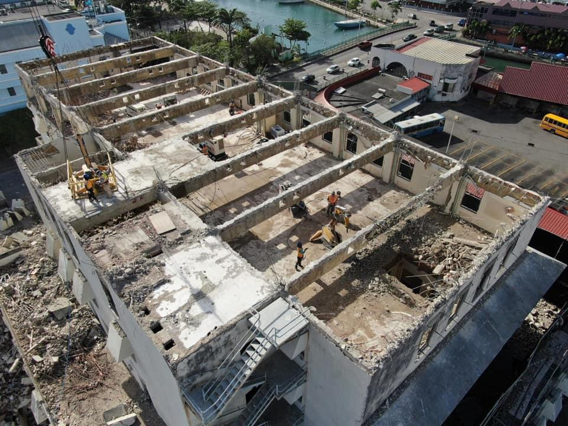

Preparatory work on the Bridgetown Transformation Project started as promised yesterday, and a fence has been erected around the old National Insurance Scheme (NIS) building to secure the site.
Speaking to The Barbados Advocate yesterday, Chief Executive Officer of Haigh Communications, Joy-Ann Haigh, whose company has been contracted to carry out the public relations for the project which was announced by Prime Minister Mia Amor Mottley last Thursday, said the contractor has started to do ‘light work’ on the inside of the building, none of which will impact the public. This, she said, includes removing some of the windows to the back of the structure.
Her comments came as she revealed that her company and the Barbados Tourism Investment Inc. is set to meet today with the executive of the Barbados Association of Retailers, Vendors and Entrepreneurs (BARVEN). She explained that following that meeting, the hope is in the next day or two to meet with all the vendors that will be affected by the project. Haigh’s comments came as she made it clear that those directly impacted by the development will be the first to be notified about the project and any expected impacts.
“We were recently engaged to deal with the communication with the public on this project, but we will not be speaking to the media at this stage. The more immediate communication must be to the vendors and businesses in the area and people who live in the immediate area of the construction site. When that is completed the wider public and everyone will then be fully informed,” she said.
She added, “It is only fair to ensure that those who are going to be impacted directly get the information first-hand directly from the PR company and not the media houses. Moving forward we will be sharing information with them and directly with credible media houses,” she said.
Haigh added that once these visits to the businesses and residents are complete, persons can check the project’s soon to be launched social media page or the local media for updates.
“Whatever is happening, if you don’t see it on our social media page we will soon be setting up, you will see it in the media and if you see something on WhatsApp that is not in keeping with that page or a credible media house, you know it is just a rumour,” she stated. (JRT)
